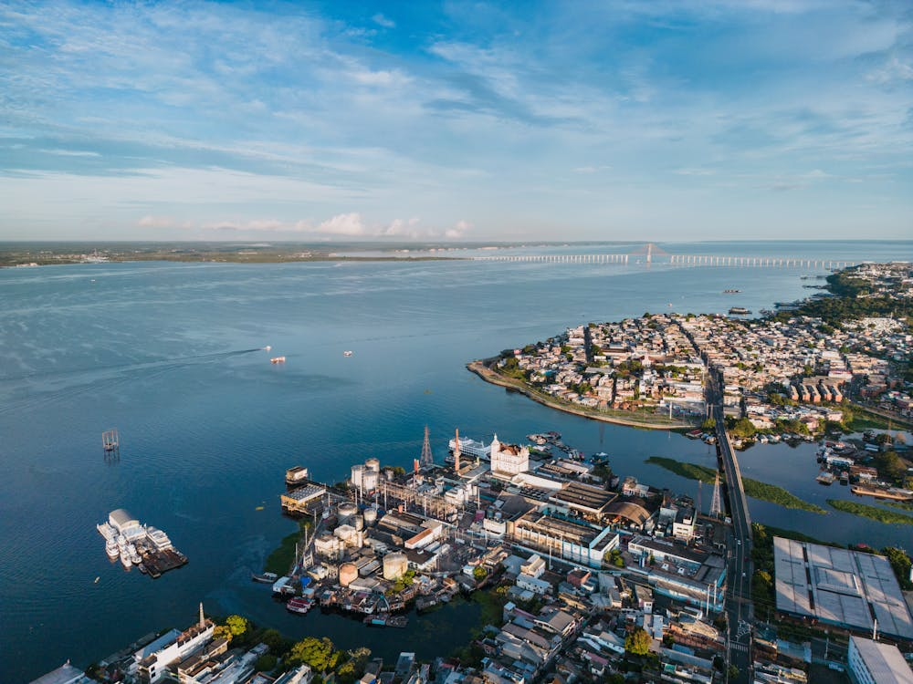
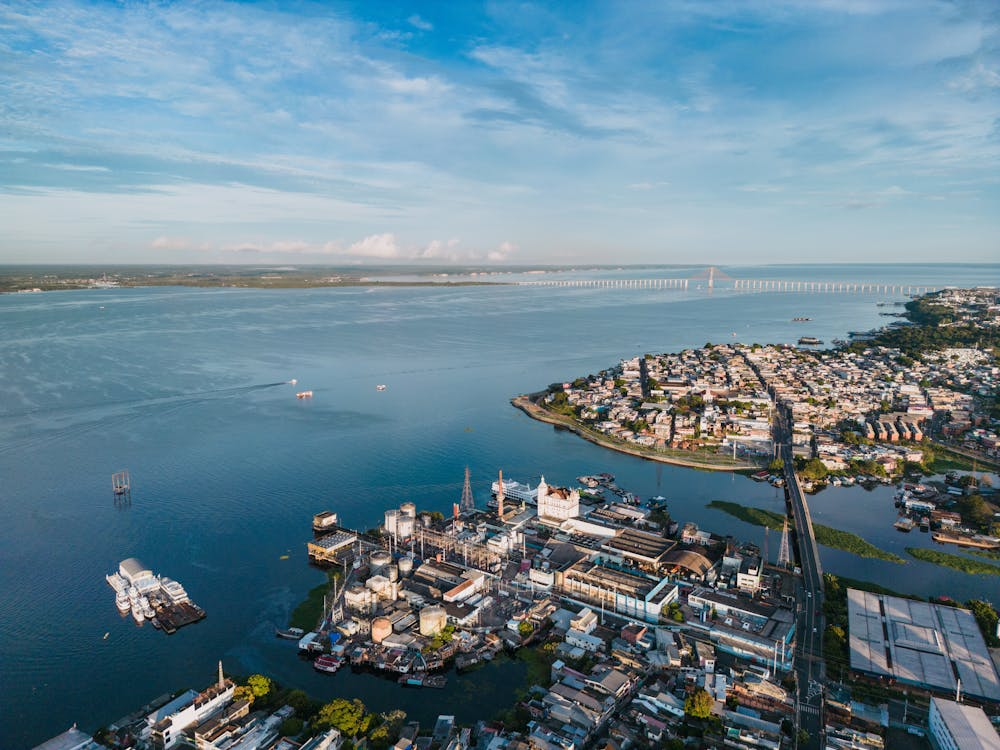

Características da Região Norte
A região Norte é a maior região do Brasil em termos territoriais e também a região que apresenta as menores densidades demográficas. Nessa região, situa-se a maior parte da Floresta Amazônica. Por isso, essa é a região do Brasil que apresenta a maior biodiversidade
Estados da Região Norte
| Estado | Capital | Gentílico |
|---|---|---|
| Acre | Rio Branco | Acriano |
| Amapá | Macapá | Amapaense |
| Amazonas | Manaus | Amazonense |
| Pará | Belém | Paraense |
| Rondônia | Porto Velho | Rondoniense |
| Roraima | Boa Vista | Roraimense |
| Tocantins | Palmas | Tocantinense |
Clima da Região Norte
A maior parte da região norte é caracterizada pelo clima Equatorial, um clima muito quente e chuvoso.
Atividades econômicas da Região Norte
Nos séculos XIX e XX, a Região Norte foi alvo de grande crescimento urbano devido à exploração da borracha.......
Populações indígenas da Região Norte
A Região Norte concentra 45% da população indígena do Brasil....
Quilombolas da Região Norte
O Pará, na Região Norte, é o estado brasileiro que possui o maior número de comunidades quilombolas.....
Clique aqui para conhecer mais sobre a Região Norte